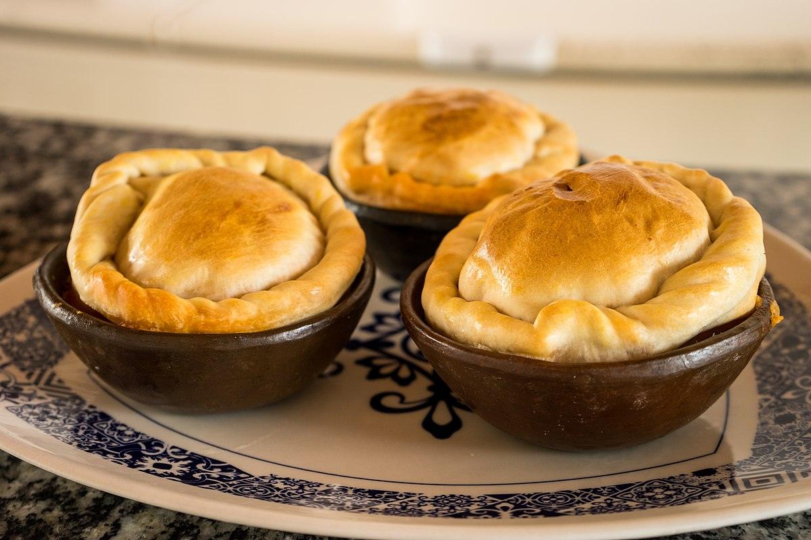

Bem-vindo
Bem-vindo ao Sabores de Cada Canto, onde celebramos a rica e diversa culinária regional do Brasil. Nosso restaurante oferece uma viagem gastronômica através dos sabores únicos de cada canto do país, desde o norte ao sul, leste ao oeste.

Sobre
No Sabores de Cada Canto, acreditamos que a comida é uma expressão da cultura e da história de um lugar. Nosso objetivo é trazer a autêntica culinária regional brasileira para você, utilizando ingredientes frescos e receitas tradicionais que foram passadas de geração em geração.

Nossa Missão
Nossa missão é oferecer uma experiência gastronômica inesquecível, destacando a diversidade e a riqueza das tradições culinárias brasileiras. Queremos que cada prato conte uma história e transporte nossos clientes para os diversos cantos do Brasil.